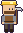

Bosses, in the order to beat them
The bosses form one ladder, each harder than the last. Every boss needs a band of soldiers: with fewer of your soldiers or fighting pets near it than it needs, only a small part of your own damage gets through (15% alone) and it heals while the fight goes on (up to 1.2% of its health a second). The most fighters you bring into a fight count, so soldiers who fall don't undo the army you came with. The boss bar shows how many of your fighters are with you. Every boss also enrages at half health, gets faster and calls for help.
| Boss | Health | Damage | Soldiers needed | Where | How it fights | Reward | |
|---|---|---|---|---|---|---|---|
 | 1. The Goblin Beastmaster | 900 (bear 900) | 22, backstab 48 | 3 | Forest warcamp | Dash, slam and sweep with his scarred bear; slips into the shadows (unseen and untouchable for 2 seconds) and strikes from behind | Gold bars, rubies, taming whistle; a trophy of him and his bear |
| 2. The Archmage | 3,000 | 30 per bolt | 4 | Top of the wizard tower, with sky knights | Flies and teleports around you, chases you out of the tower (up to 60 blocks from it); fans, rings and homing orbs of bolts; mirror images. Lands for a moment every 9 to 12 seconds | Sky staff, arcane ring, spirit gem; the sky portal opens at the top of the tower | |
| 3. The Magma Wizard | 4,000 | 30 per bolt, burns | 5 | Top of the magma fortress, with imps and magma knights | Flies, teleports and chases like the Archmage; burning bolts, meteors and fire from the ground | Magma staff; the magma portal opens at the top of the fortress | |
| 4. The Sky Ranger | 5,000 | 28 per arrow, 70 marked shot | 6 | Throne room of the sky castle (20-30 guards) | Triple shots, arrow rain, leaps; the gale (a wind ring, then everyone near is hurled back); the marked shot (a red mark on one fighter, then a fast arrow: move!) | Ranger's bow, a sky feather, two top permanent upgrades; mythril forms in the clouds | |
| 5. The Magma Knight | 6,500 | Heavy, sets you on fire | 8 | Throne room of the magma castle (20-30 guards) | 1.5x size, double reach, one great swing at a time; charges, leaps and shockwaves; molten armor (glows for 6 s, takes a fifth of the damage and burns melee attackers until struck by 4 different fighters, then cracks and takes 50% more); lines of erupting fire (watch for the glowing cracks) | Magma blade, two top permanent upgrades; with the Sky Ranger also beaten, adamantite forms in the magma realm | |
| 6. Grukk the Ogre King | 13,000 | 62 per hammer | 10 | Deepest chamber of the orc cave base | Huge reach and knockback; enraged he calls ogres and slams the ground | Gold bars, rubies, diamonds, a treasure chest, his war maul | |
| 7. The Kraken | 18,000 | 38 per tentacle | 12 (soldiers aboard count) | The far ocean opposite the dragon | Tentacle slams that smash boats, blinding ink, dives that burst up under you | Opens its sunken treasure: Kraken fang daggers, 500+ coins | |
| 8. Vorthax the ember wyrm | 30,000 | Fire breath and fireballs | 20 | Dragon mountain | Breath, fireball volleys, dives and landings; heals unless all 20 soldiers came. Once you have stepped into its lair it is awake: leave and it bursts out after you and fights you in the open, until you get far away, go into the sky or magma realm, or stay out of its reach for about half a minute. | The dragon amulet, gold bars, 1,000 coins; the ending |
The army each boss needs
Soldiers and fighting pets count; workers, miners and penned animals do not. With fewer than the number needed near the boss, only a small part of your own damage gets through (15% alone) and it heals as the fight goes on; with the full number it takes full damage. The most fighters you bring into one fight count, so soldiers who fall do not undo it. Bring a few more than the minimum to cover losses.
| Boss | Needed | Suggested | Counts when | A good mix |
|---|---|---|---|---|
| The Goblin Beastmaster | 3 | 5 | within 20 blocks | Knights and macebearers up front to hold the bear, two archers to pick at the Beastmaster when he shows himself |
| The Archmage | 4 | 6 | within 20 blocks | Archers and wizards: he flies and teleports, so ranged soldiers keep hitting him; a knight or two guard them |
| The Magma Wizard | 5 | 8 | within 20 blocks | Like the Archmage, mostly archers and wizards; bring fire wards and healing food for the burning bolts |
| The Sky Ranger | 6 | 9 | within 20 blocks | Knights in front to soak the arrow rain, archers and wizards behind; spread out so his gale and mark hit fewer soldiers |
| The Magma Knight | 8 | 12 | within 20 blocks | Melee from many sides at once (his molten armor turns aside blows from one side), plus a few archers |
| Grukk the Ogre King | 10 | 15 | within 20 blocks | Knights and macebearers to take his hammer, archers behind; his reach is huge, so keep the ranged soldiers back |
| The Kraken | 12 | 18 | within 30 blocks, aboard counts | Archers and wizards aboard your ship (soldiers aboard count); melee only help when he surfaces next to the boat |
| Vorthax the ember wyrm | 20 | 20 | in the fight with you, in its lair or out in the open | Your whole army of 20: archers and wizards for while it flies, knights and macebearers for when it lands; it chases you out of its lair, so you can fight it in the open where everyone can reach it |
Warlords lead every enemy castle (450 health and up, knight blade). They charge, retreat and raid, forge better gear over time, and fall with their castle; the lone-attacker rule for villages applies to them.